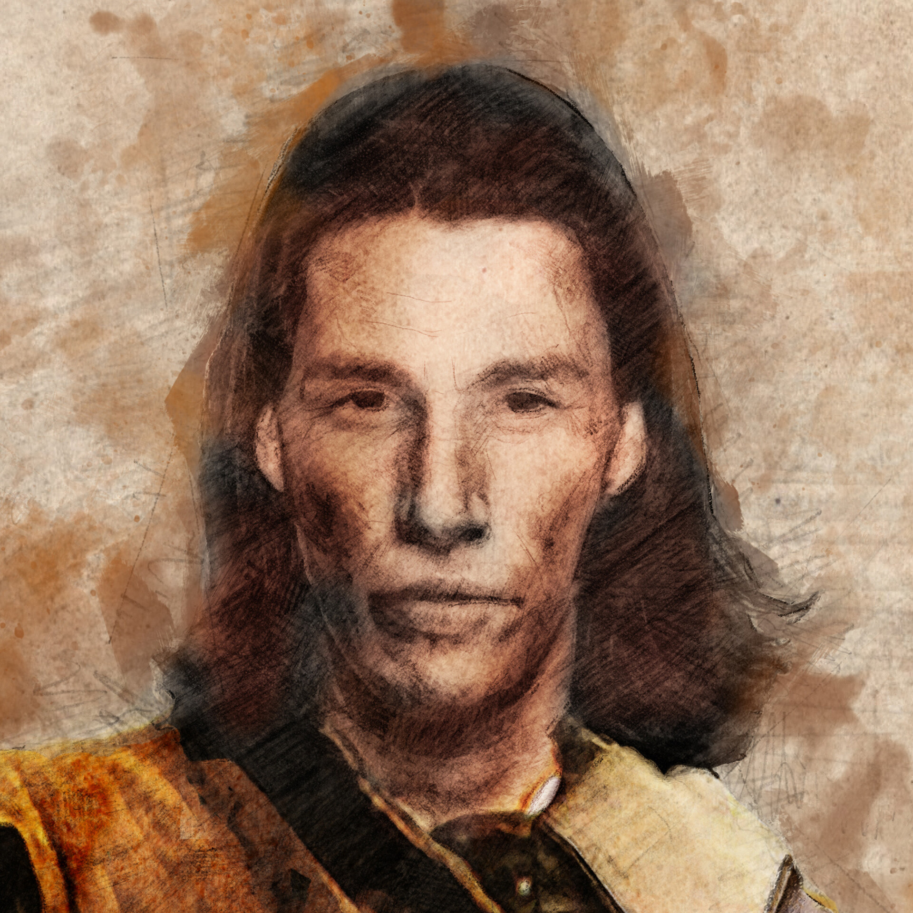
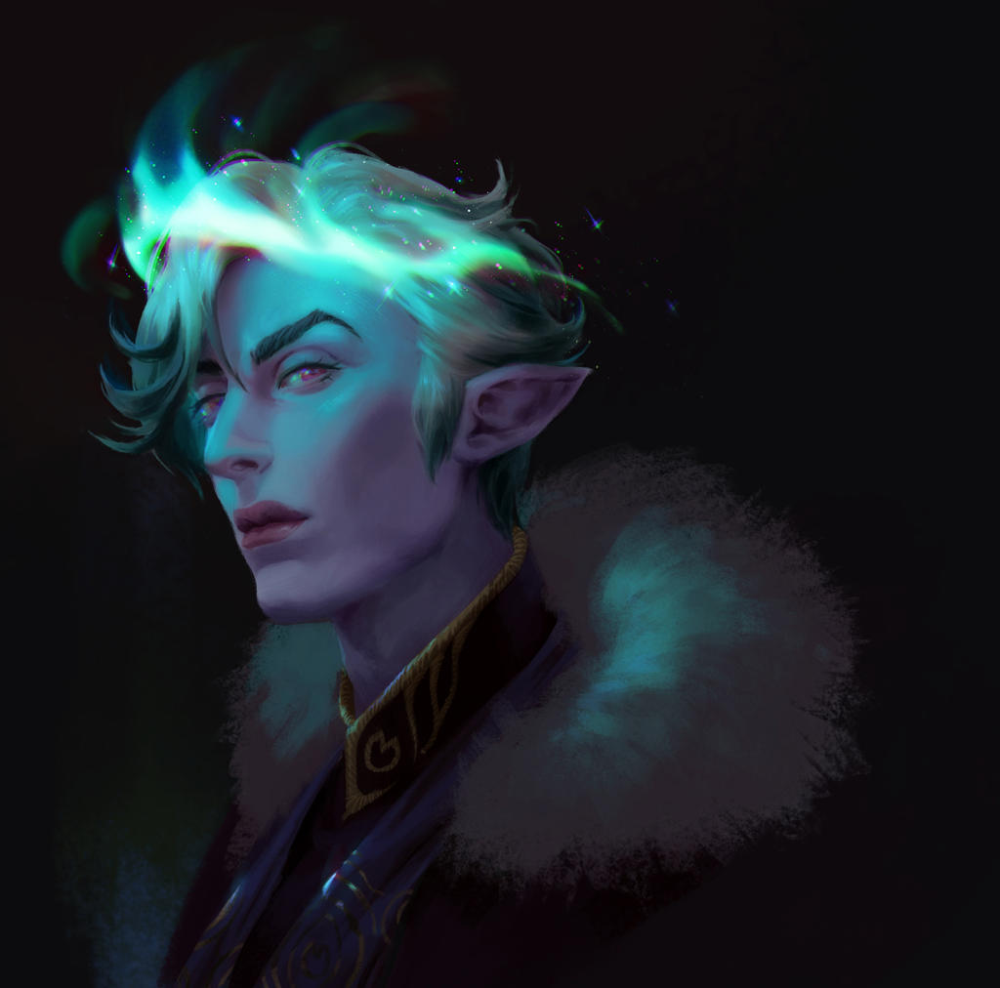
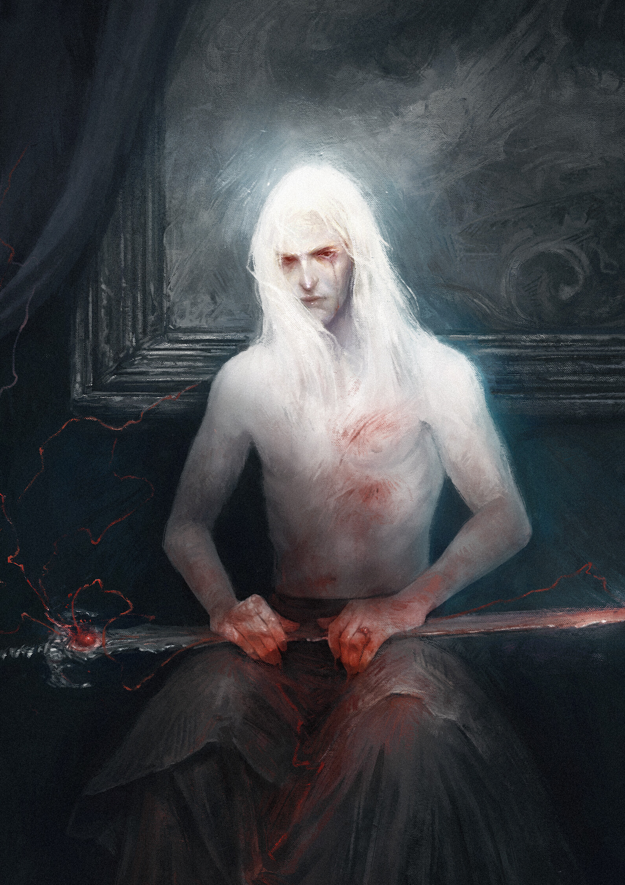
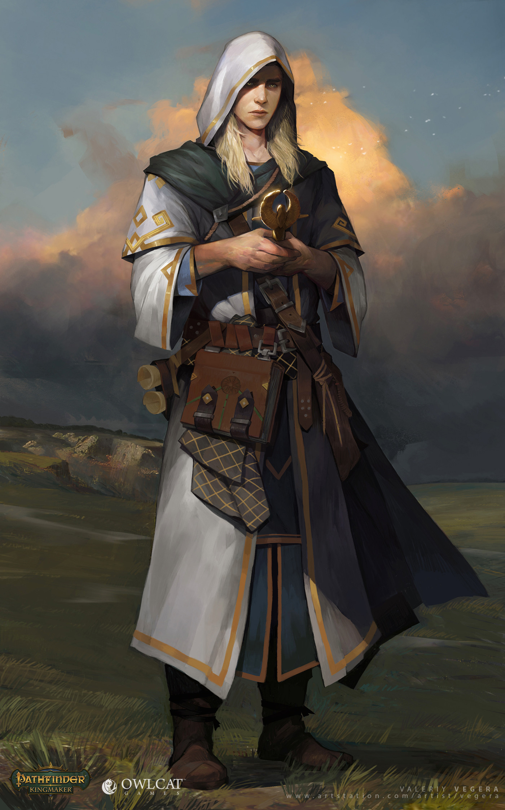
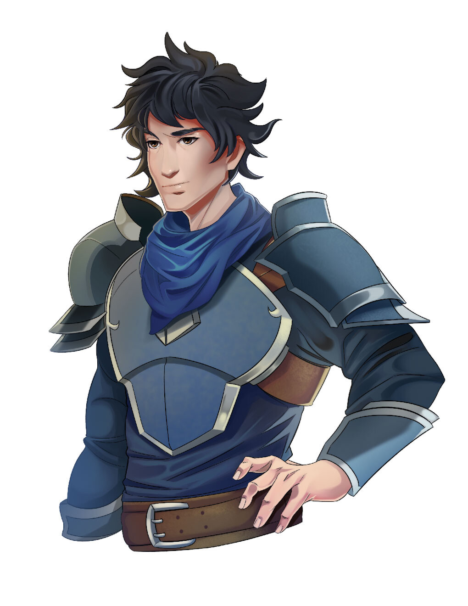
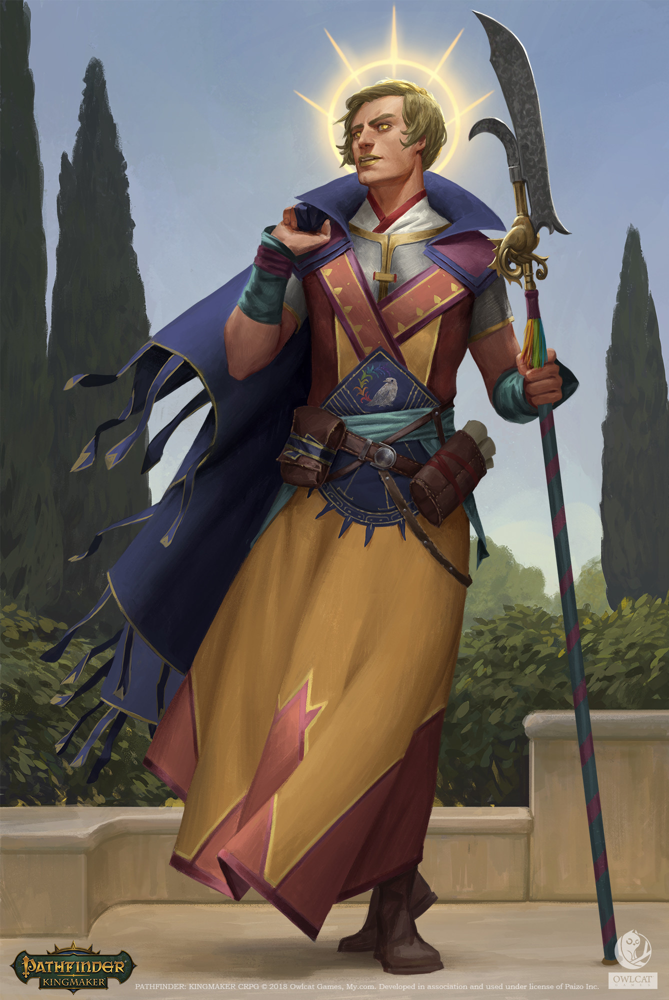
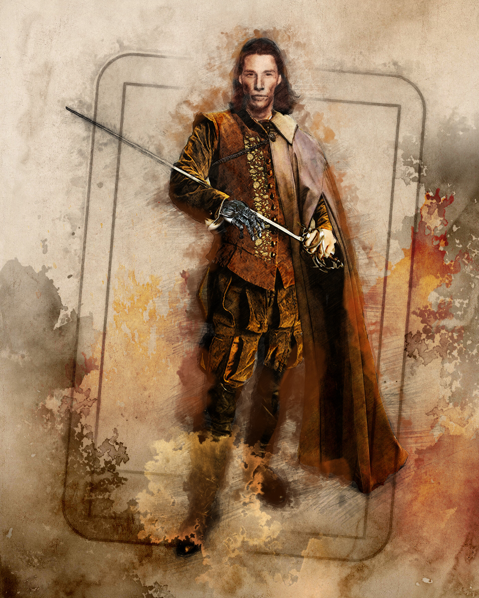
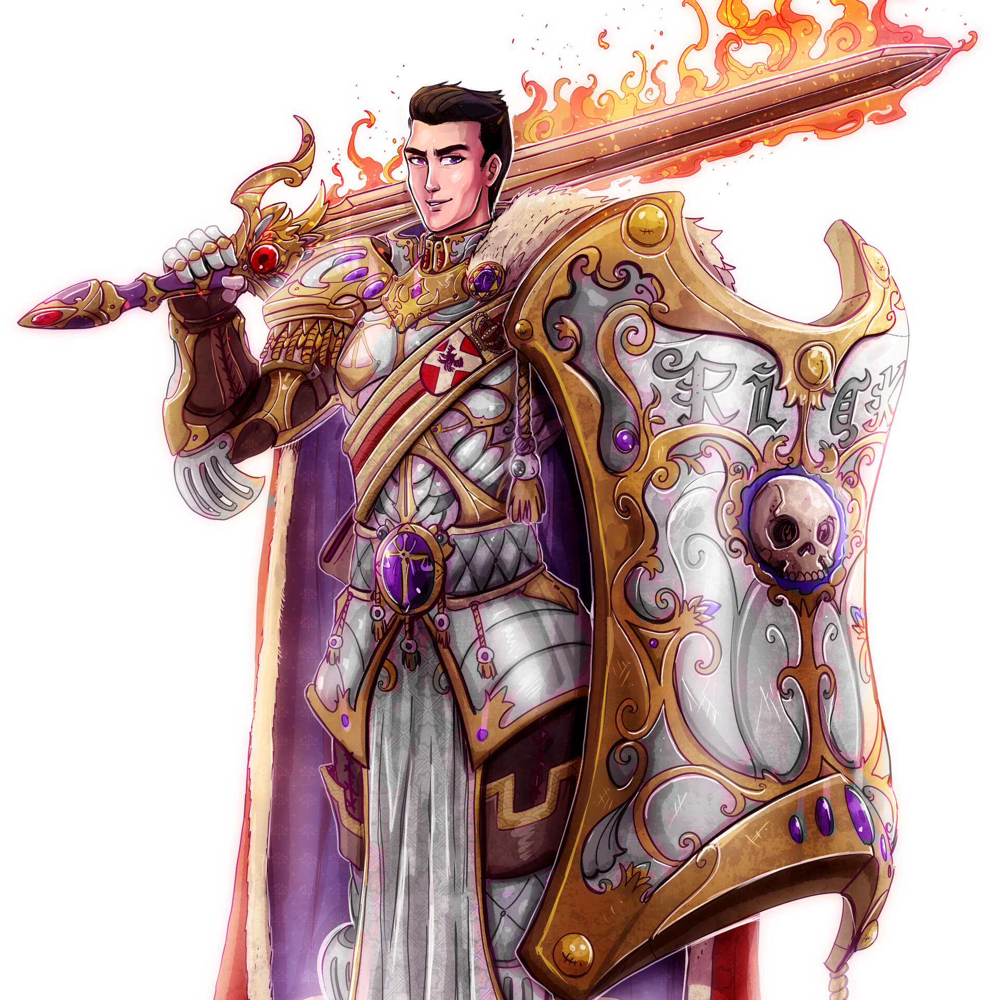

A
Solemn heir (face crop)
Painterly portrait, parchment wash, intense quiet eyes. Feels like a dream-memory of a man, not a cosplay photo. Human-coded.
Santiago Lozano — Benedict, Prince of Amber
Dream / Seeming appearance for Adrian. Early–mid 20s Fairchild heir, Feywild-raised. Nathan locked Option B on 2026-07-18.

GisAlmeida — Phillip O'Niel, Northern Baron. Fey / Summer Court energy: crown of light, dark void, mysterious gaze. Use this as the visual reference for dream-Adrian (credit the artist; reference pick, not a commercial rights claim).
File: LOCKED-adrian-B-gisalmeida-northern-baron.jpg · DeviantArt source
Shortlist (archive)

Painterly portrait, parchment wash, intense quiet eyes. Feels like a dream-memory of a man, not a cosplay photo. Human-coded.
Santiago Lozano — Benedict, Prince of Amber

Explicitly fey / changeling-adjacent energy — crown of light, dark void, mysterious gaze. Dream-Adrian leans Summer Court over mortal Fairchild.
GisAlmeida — Phillip O'Niel, Northern Baron

Haunting, dreamlike, otherworldly. Very “message from the Feywild.” More tragic/mythic than friendly brother.
Maéna Paillet — The Pale Prince of Ruins

Classic RPG character portrait lighting. Gentle, almost saintly — good if dream-Adrian feels like hope / rescue, not threat.
Valeriy Vegera — Tristian (Pathfinder: Kingmaker)
Also strong

Clean illustration, early-20s face, stoic. Reads as mortal nobility who learned to fight — Fairchild heir energy.
Félix Hinojosa — Prince Fathom

Luminous eyes / soft glow — dream-friendly. Slightly more “divine” than Fairchild-mortal, but beautiful portrait craft.
Akim Kaliberda — Aasimar Priest (Kingmaker)

Same artist as A — full composition if you want more than a bust.

Very “illustration,” but flashy (flaming sword, purple eyes). Use if dream-Adrian is theatrical / oversold by the Seeming.
Ricardo Mango — Noble Prince
Worth browsing next (not cached here)